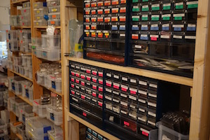

<!DOCTYPE html>
<html>
  <head>
    <meta charset='utf-8'>
    <meta http-equiv="X-UA-Compatible" content="chrome=1">

    <link rel="stylesheet" type="text/css" href="stylesheets/stylesheet.css" media="screen">
    <link rel="stylesheet" type="text/css" href="stylesheets/github-dark.css" media="screen">
    <link rel="stylesheet" type="text/css" href="stylesheets/print.css" media="print">

    <title>Hack-a-thon ZERO/title>
  </head>

  <body>

    <header>
      <div class="container">
        <h1>Hack-a-thon ZERO</h1>
      </div>
    </header>

    <div class="container">
      <section id="main_content">
        <h3>
          <a id="welcome-to-github-pages" class="anchor" href="#welcome-to-github-pages" aria-hidden="true"><span class="octicon octicon-link"></span></a>テーマ
        </h3>
        <p>
          Rasppberry PI ZEROを用いたハッカーソンを開催します。テーマは、「今までのコンピュータの常識を変えるZEROによる、新しい発想のガジェットを作り出す」です。
        </p>

        <p>
          
        </p>

      <h3>概要</h3>
      <p>
      <table  border="1" cellpadding="5" cellspacing="0">
      <tr>
      <td>主催</td><td><a href="http://www.fabkura.org/">Fab蔵</a></td>
      </tr>
      <tr>
      <td>後援</td><td>会津若松市(予定)</td>
      </tr>
      <tr>
      <td>協賛</td><td><a href="http://www.gclue.com">株式会社GClue</a>, <a href="http://www.thedesignium.com/">株式会社デザイニウム</a></td>
      </tr>
      <tr>
      <td>会場</td><td><a href="http://www.fabkura.org/">Fab蔵</a></td>
      </tr>
      <tr>
      <td>日程</td><td>2015年12月12日 10:00-Endless<br>2015年12月13日 10:00-16:00<br></td>
      </tr>
      <tr>
      <td>発表会</td><td>2015年12月13日 16:00-17:00</td>
      </tr>
      <tr>
      <td>賞</td><td>会津若松市長賞, Fab蔵賞</td>
      </tr>
      <tr>
      <td>参加者上限</td><td>15名</td>
      </tr>
      <table>
      <br>
</p>
<h3>参加者一覧</h3>
<p><a href="https://github.com/FaBoPlatform/Hack-a-thon-zero/tree/master/player">https://github.com/FaBoPlatform/Hack-a-thon-zero/tree/master/player</a><br>

<h3>参加申し込み</h3>
<p><a href="https://github.com/FaBoPlatform/Hack-a-thon-zero/">https://github.com/FaBoPlatform/Hack-a-thon-zero/</a><br>
をフォークし<br>
./playerフォルダに、自分のGithubアカウント名のファイルを作成し、メッセージを記載して、Pull Requestしてください。<br>
</p>

<h3>当日使用できる機材</h3>

 <table  border="1" cellpadding="5" cellspacing="0">
      <tr>
      <td></td><td></td>
      </tr>
      <tr>
      <td><center>ZERO 20台</center></td><td><center>ZERO FaBo Extentionボード</center></td>
      </tr>
      <tr>
      <td></td><td></td>
      </tr>
      <tr>
      <td><center>数千のパーツ群</center></td><td><center>レーザーカッタ</center></td>
      </tr>

      <table>

      </section>
    </div>

    
  </body>
</html>
